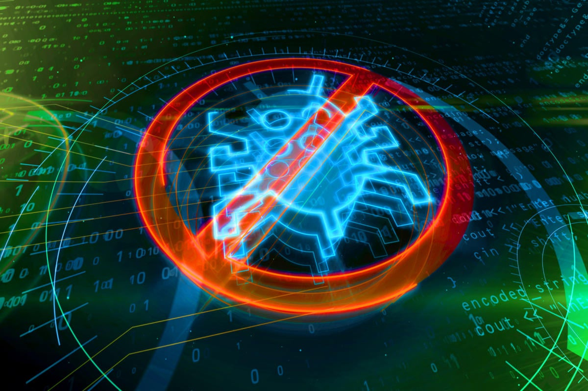
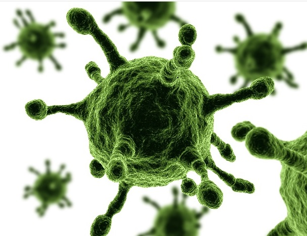
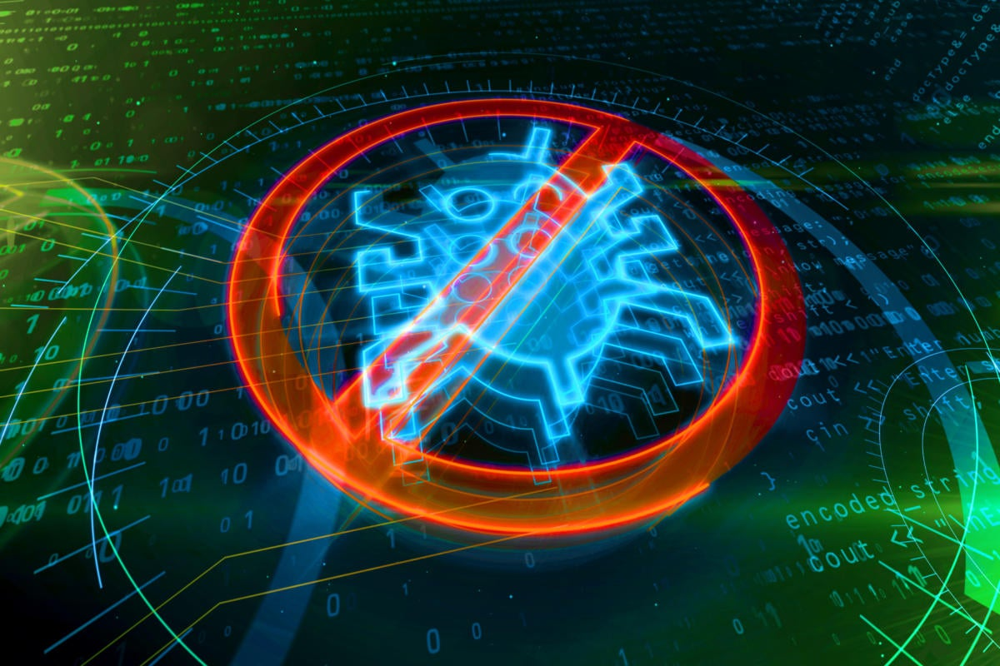
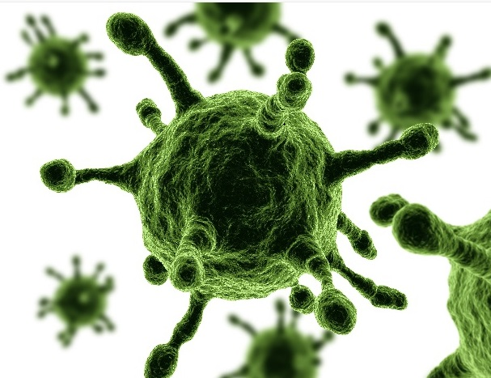
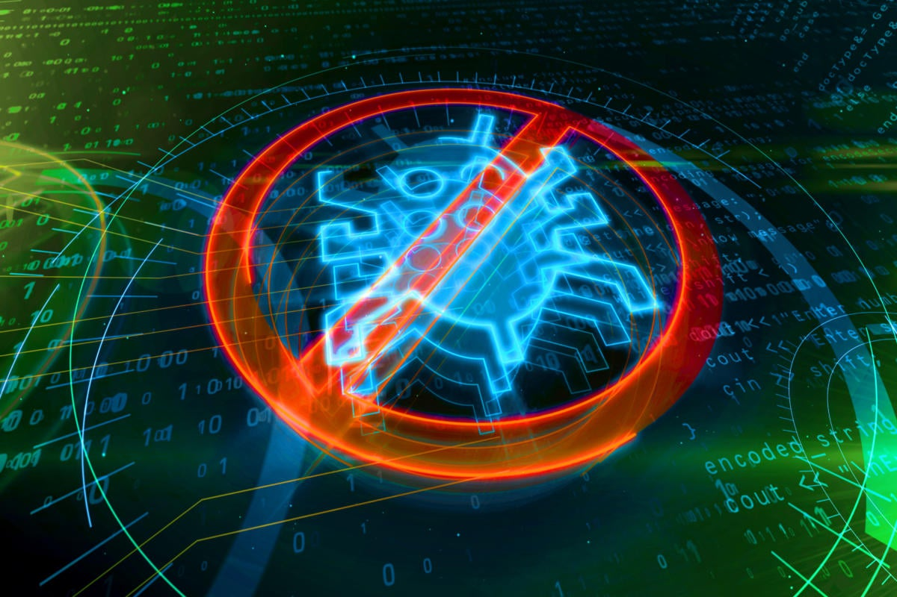
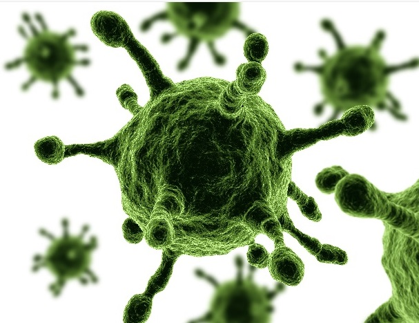
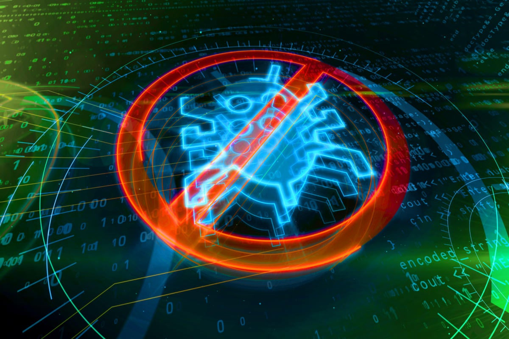
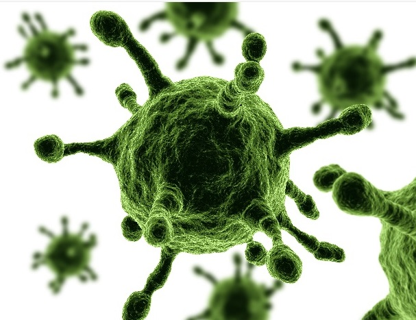

1. Melissa En primer lugar, Melissa apareció en 1999, un virus que engañaba al usuario mediante un correo electrónico que, al abrirlo, se reenviaba a los 50 primeros contactos.
2. ILoveYou En los 2000, el troyano ILoveYou fue uno de los más importantes en la historia. Infectó a más de 50 millones de usuarios en una sola semana y también se transmitía por correo electrónico.
3. WannaCry Uno de los más recientes de la lista, el ransomware WannaCry se originó en el año 2017 y afectó a las grandes empresas. A los ordenadores infectados se les encriptaban los datos y luego se les pedía un rescate por la suma de 300 dólares.
4. Morris Por otro lado, gusano Morris es uno de los virus más antiguos de la lista. Apareció en 1088 y causó pérdidas por más de 90 millones de dólares.
5. SQL Slammer Creado en 2003, SQL Slammer logró ralentizar el tráfico de Internet. Los ordenadores infectados con este virus enviaban IPs a otros ordenadores que presentaban algún tipo de vulnerabilidad en su sistema de protección.
6. Mydoom Aparecido en 2004, este malware se creó en Rusia. Se cree que fue uno de los virus más rápidos y también más efectivos de la historia. En los ordenadores infectados se abría el bloc de notas con un texto que luego se enviaba a los contactos del usuario.
7. Blaster En 2003 apareció Blaster, un virus que afectó, por ejemplo, a los sistemas Windows XP y 2000, generando que se reinicien constantemente y haciendo aparecer un mensaje.
8. Chernobyl Para finalizar, Chernobyl se creó en 1998 y afectó especialmente a los sistemas Windows 95 y 98, formateando su disco duro y borrando la información de los usuarios.
La palabra virus viene del latín y significa «veneno» o «baba». Comparablemente desagradable, ya que estos términos son las consecuencias que ocurren cuando un virus informático infecta tu propio PC: en el peor de los casos, el virus del PC causa un fallo completo del sistema. Los orígenes del virus informático se remontan al americano Fred Cohen. Fred programó el primer virus de PC en 1983, que podía penetrar sin casi ser notado en otras aplicaciones, programas y propagarse más. Sin embargo, hoy en día, Fred Cohen no es un hacker, sino un investigador y profesor de seguridad informática en la Universidad de New Haven en West Haven. Sin embargo, su desarrollo sentó las bases de muchos peligrosos virus informáticos conocidos hoy en día. Hay muchos tipos diferentes de virus informáticos y todos ellos pueden ser devastadores. A medida que se propagan, pueden robar información personal, paralizar el rendimiento del ordenador y causar todo tipo de estragos. Siga leyendo para saber qué es un virus informático. A continuación, aprenda a protegerse contra los virus y otras amenazas peligrosas en línea con un potente software antivirus Un virus informático es un tipo de malware que se adhiere a otros programas, se autorreplica y se propaga de un ordenador a otro. Cuando un virus infecta un ordenador, hace copias de sí mismo y se adhiere a otros archivos o documentos. A continuación, modifica esos archivos y continúa propagándose. Los virus infectan los ordenadores de forma discreta, y a menudo están diseñados para destruir archivos personales o conseguir el control de los dispositivos. Los virus informáticos hacen copias de sí mismos y se propagan por los dispositivos y las redes como los virus biológicos, que pasan de una persona a otra. Y al igual que las versiones biológicas, mientras que algunos virus informáticos son simplemente molestos, otros pueden causar daños importantes. Entonces, ¿cuál es la diferencia entre un virus y un malware (software malicioso)? El término «virus» es a menudo un término comodín utilizado para referirse a cualquier tipo de software creado para ser dañino. Pero un virus es solo un tipo de malware, y la definición de un virus es que es un programa informático que puede autorreplicarse, infectar otros programas y propagarse a otros ordenadores.
RetornarTécnicamente, un virus informático es un programa informático auto propagado. Lo especial de los virus, en comparación con otras formas de malware, es que pueden propagarse en el PC sin el consentimiento del usuario*. El virus informático se infiltra en otros programas informáticos, se propaga e infecta otros sistemas. El virus informático puede, por lo tanto, causar cambios en el sistema operativo o daños en otros programas. En el transcurso de esto, el usuario final suele sufrir pérdidas de datos en su propio PC o incluso daños en el hardware. Estrictamente hablando, hay que distinguir entre el virus y gusano informático:a diferencia de los llamados gusanos informáticos, un virus informático suele propagarse sólo localmente, mucho más lentamente y, por lo tanto, causa menos daños en general. «Virus informático» es un término general que incluye muchos tipos distintos de virus, mecanismos de entrega e impactos. Para entender cómo funcionan los virus informáticos, es útil dividirlos en dos categorías: los que empiezan a infectar y replicarse en cuanto entran en su ordenador, y los que permanecen latentes, a la espera de que usted ejecute el código de forma involuntaria. Los virus informáticos tienen cuatro fases (inspiradas en la clasificación que hacen los biólogos del ciclo vital de un virus humano). Fase durmiente: Es cuando el virus permanece oculto en su sistema, a la espera. Fase de propagación: Esta es la etapa viral, en la que el virus comienza a autorreplicarse, almacenando copias de sí mismo en archivos, programas u otras partes de su disco. Los clones pueden estar ligeramente alterados en un intento de evitar la detección, y estas copias también se autorreplicarán, creando más clones que seguirán copiando y propagándose. Fase de activación: Suele hacer falta una acción específica para desencadenar o activar el virus. Puede ser una acción del usuario, como hacer clic en un icono o abrir una aplicación. Otros virus están programados para activarse después de un determinado tiempo, como una bomba lógica diseñada para activarse después de que su ordenador se haya reiniciado un determinado número de veces (esto se hace para ocultar el origen del virus). Fase de ejecución: En esta fase el programa del virus se ejecuta y libera su carga útil, el código malicioso que daña el dispositivo.
RetornarEn general, se pueden distinguir dos tipos diferentes de virus informáticos según la vía de infección. Se trata, por un lado, de virus de PC que infectan archivos y, por otro, de virus que se copian a sí mismos durante el arranque. La ventaja de los virus de arranque es que se activan directamente al inicio del sistema. Los virus de programa se dividen en virus de no-suscripción y virus de suscripción. Los primeros se colocan al principio o al final de un archivo ejecutable. Sin embargo, el tamaño del archivo se modifica por el archivo adjunto del virus informático. Los virus de sobreescritura no cambian el tamaño del archivo porque este tipo de virus informático sobrescribe el principio del archivo. También hay virus de llamada, por ejemplo, que insertan un tipo de enlace en el archivo a ser infectado. Esto lleva al virus real, que está oculto en el PC. Tipos de virus informáticos Gusano Este virus está creado con la capacidad de replicarse entre ordenadores. A menudo causa errores en la red, como consecuencia de un consumo anormal del ancho de banda ocasionado por este malware. Los ciberdelincuentes suelen usar nombres llamativos en los enlaces para que este virus sea descargado como, por ejemplo, las palabras: sexo, apuestas, regalo o premio. Adware El adware también es denominado como software con publicidad. Los creadores de adware incluyen anuncios o ayudan a distribuir otro software para ganar dinero. Existen en todas las computadoras y dispositivos móviles. Aunque la mayoría de estos son perfectamente seguros y legítimos, algunos pueden tener motivos oscuros como distribuir otros virus o abrir puertas traseras. Spyware Es una clase de malware más especializada, ya que es básicamente un programa espía. Su objetivo es robar toda la información de tu ordenador y hacérsela llegar a su dueño. Es una de las principales vías para el éxito de los delitos informáticos.Se usan principalmente para robar información y almacenar los movimientos de los usuarios en la web y muestran avisos pop-ups a los usuarios. Algunos spywares son puestos con intención en ordenadores corporativos o públicos para monitorear a los usuarios. Pueden recolectar data de cualquier tipo, como hábitos de navegación online, contraseñas, información bancaria, entre otros. Ransomware Este tipo de malware que es mucho más especializado que los anteriores. Amenaza con publicar datos de la víctima o bloquear para siempre el acceso a su ordenador a menos que se pague una suma. De ahí que la traducción del nombre sea secuestro de datos. Las técnicas más avanzadas son la extorsión criptoviral, que encriptan los archivos de la víctima haciéndolos inaccesibles. Si se hace bien es imposible descifrar esa clave. Se llevan a cabo usando troyanos, que parecen archivos legítimos. Botnet Son redes de dispositivos infectados que los ciberdelincuentes utilizan para lanzar ataques, como el envío masivo de correos spam, ataques de denegación de servicio o DDoS, robos de credenciales, etc. Una vez que un dispositivo está infectado, entrará a formar parte de la red de botnets cuyo objetivo es seguir expandiéndose. Rootkit Este se esconde entre los procesos del sistema y no solo roba información, sino que emplea los recursos de tu equipo para fines maliciosos, como el envío de SPAM o virus. Son muy difíciles de detectar, pues se camuflan en el sistema operativo y pueden pasar desapercibidos incluso para los antivirus. Phishing Este ataque es de los más comunes y frecuentes ya que se realiza a través de un email. Trata de ofrecer contenidos falsos de forma visual en un email para que el usuario haga clic e instale un código malicioso en el ordenador. Troyanos Un troyano es un tipo de malware que, para lograr infectar un equipo, se camufla como un software legítimo. Una vez activados, los troyanos pueden permitir a los cibercriminales espiarte, robar tus datos confidenciales y obtener acceso por una puerta trasera a tu sistema, conocida como backdoor. Además, son capaces de eliminar archivos, bloquear cuentas, modificar contraseñas e incluso ralentizar el rendimiento de tu equipo. Si te interesa conocer más acerca de esto, te recomendamos revisar la Maestría en Ciberseguridad que tenemos aquí en CEUPE, el cual proporcionará al estudiante los saberes necesarios para establecer un plan de seguridad de redes digitales, que asegure la privacidad de datos y la integridad en el intercambio de información. Todo debido al cumplimiento del reglamento de transferencia de datos, aplicando la normativa actual y realizando auditorias de control.
RetornarEsta es una pregunta que emplea a muchas personas y empresas. Una cosa es cierta: la protección completa contra los virus informáticos sólo sería teóricamente posible si el PC estuviera completamente protegido contra datos extraños. Pero eso significaría evitar el intercambio de archivos a través de una memoria USB, CD o Internet. Por lo tanto, este enfoque no es muy práctico. Un método eficaz en la lucha contra un virus de PC es la prevención y la precaución al tratar con fuentes de Internet. Esto significa, por ejemplo, que no deben abrirse los archivos adjuntos de los correos electrónicos o los archivos de fuentes desconocidas. Además, debe utilizar un filtro de spam, como el del servicio Spam & Malware Protection, para sus buzones de correo electrónico. Si los virus informáticos llegan a tu PC, un programa antivirus puede detectar, bloquear y combatir el Malware. Las versátiles herramientas antivirus disponibles en el mercado pueden dividirse en tres tipos: Escáneres en tiempo real, manuales y on-line. Para protegernos de los virus informáticos es: 1. Asegúrese de que todos sus programas tengan instalado el software antivirus más reciente. Esto es principalmente cierto para el sistema operativo, el software de seguridad y el navegador web, pero también es importante para cualquier programa que use con más frecuencia. 2. Los virus tienden a aprovechar los errores o las vulnerabilidades en el código de estos programas para propagarse a otras máquinas, y aunque las compañías de software en general reparan rápidamente los agujeros, estos parches solo funcionan si los descarga a su computadora. 3. También es importante evitar actividades que puedan comprometer su computadora. Estos incluyen abrir archivos adjuntos de correo electrónico no solicitados, visitar páginas web desconocidas, descargar programas de sitios no confiables o redes de transferencia de archivos punto a punto. Para minimizar el riesgo de contraer el virus, cada miembro de la familia debe entender y seguir estas reglas. 4. Es necesario controlar la actividad de los niños en Internet, para asegurarse de que no visiten sitios sospechosos o descarguen programas o archivos aleatorios. instalar software de prevención de infecciones y detección de virus El siguiente paso importante para proteger su computadora y su familia es instalar un software de seguridad confiable en su computadora que pueda escanear activamente su sistema y luchar contra los virus. Sin embargo, debe tener en cuenta que no todas las soluciones de seguridad son iguales. El software antivirus gratuito se ofrece en Internet, pero la mayor parte no es lo suficientemente confiable como para brindar una protección completa o no se actualiza regularmente para garantizar la seguridad.
RetornarIr a la principal